7.3 Visualizing networks
To visualize the Network data we use {ggraph}.
It builds on top of {tidygraph} and {ggplot2} to allow a complete and familiar grammar of graphics for network data.
7.3.1 Setting up the visualization
Syntax of {ggraph}:
ggraph() %>%
ggraph::geom_<functions>it will choose an appropriate layout based on the type of graph you provide.
Getting Started guide to layouts
7.3.1.1 Specifying a layout
What is the base requirenment?
The data frame need to be with at least an x and y column and with the same number of rows as there are nodes in the input graph.
As an example we take the data(highschool, package = "ggraph") and make a visualization of the graph:
hs_graph <- tidygraph::as_tbl_graph(highschool,
directed = FALSE)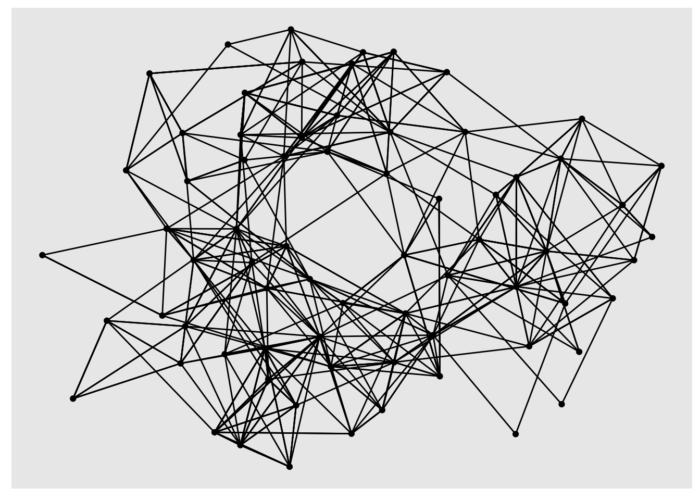
A second example is with more features:
hs_graph <- hs_graph %>%
tidygraph::activate(edges) %>%
mutate(edge_weights = runif(n()))
ggraph(hs_graph, layout = "stress", weights = edge_weights) +
geom_edge_link(aes(alpha = edge_weights)) +
geom_node_point() +
scale_edge_alpha_identity()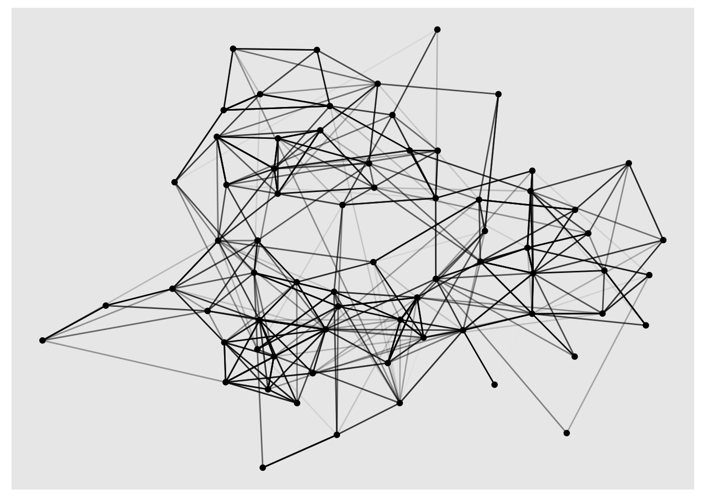
In the following examples we see different layouts.
Information about “drl” type of layout: DRL force-directed graph layout, an be found in the igraph package.
layout <- ggraph::create_layout(hs_graph, layout = 'drl')
ggraph(layout) +
geom_edge_link() +
geom_node_point()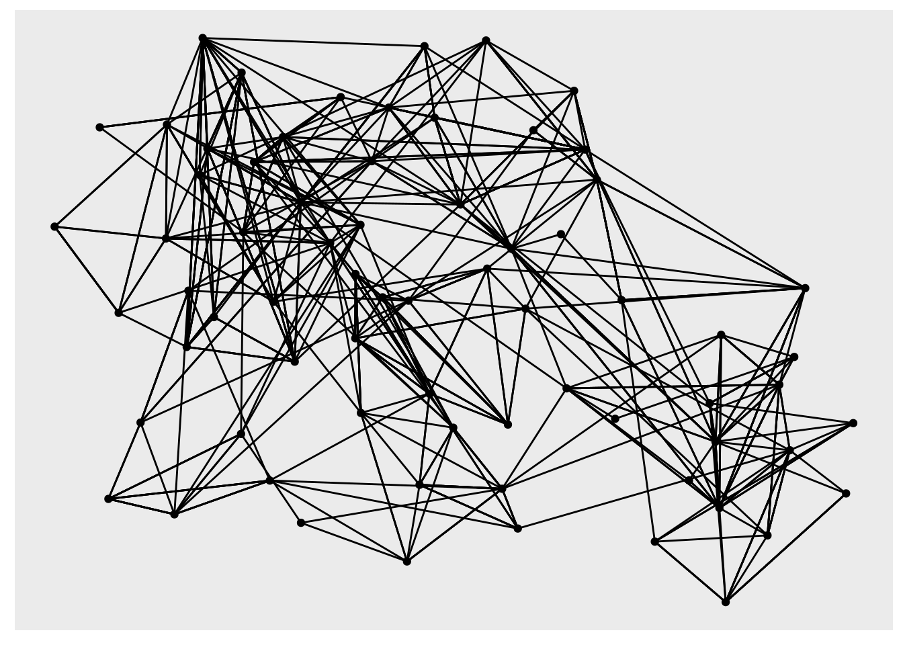
Instead of {tidygraph} we use {igraph}, with layout = “kk”: layout.kamada.kawai
require(ggraph)
require(igraph)
hs_graph2 <- igraph::graph_from_data_frame(highschool)
layout <- create_layout(hs_graph2, layout = "kk")
ggraph(layout) +
geom_edge_link(aes(colour = factor(year))) +
geom_node_point() 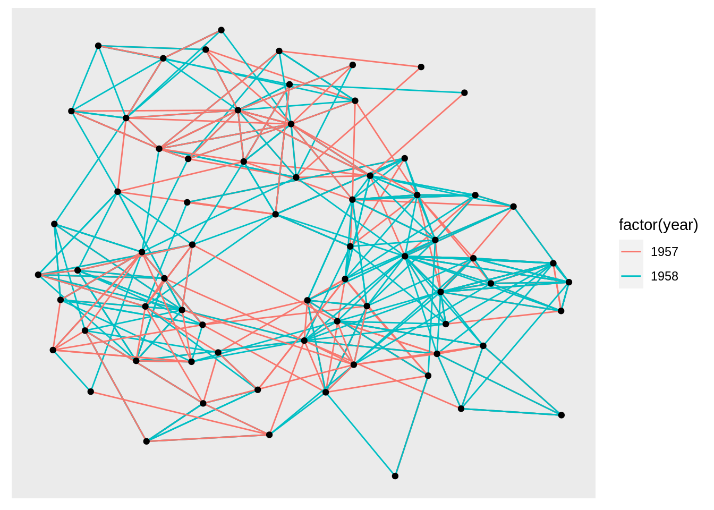
A very simple example to understand how to make a graph network is from this tutorial: Networks in igraph
To understand a bit more about the graph structure we can use these functions:
## + 3/3 edges from a7c2adf:
## [1] 1--2 2--3 1--3## + 3/3 vertices, from a7c2adf:
## [1] 1 2 3## 3 x 3 sparse Matrix of class "dgCMatrix"
##
## [1,] . 1 1
## [2,] 1 . 1
## [3,] 1 1 .7.3.1.2 Circularity
Layouts can be linear and circular.
coord_polar() changes the coordinate system and not affect the edges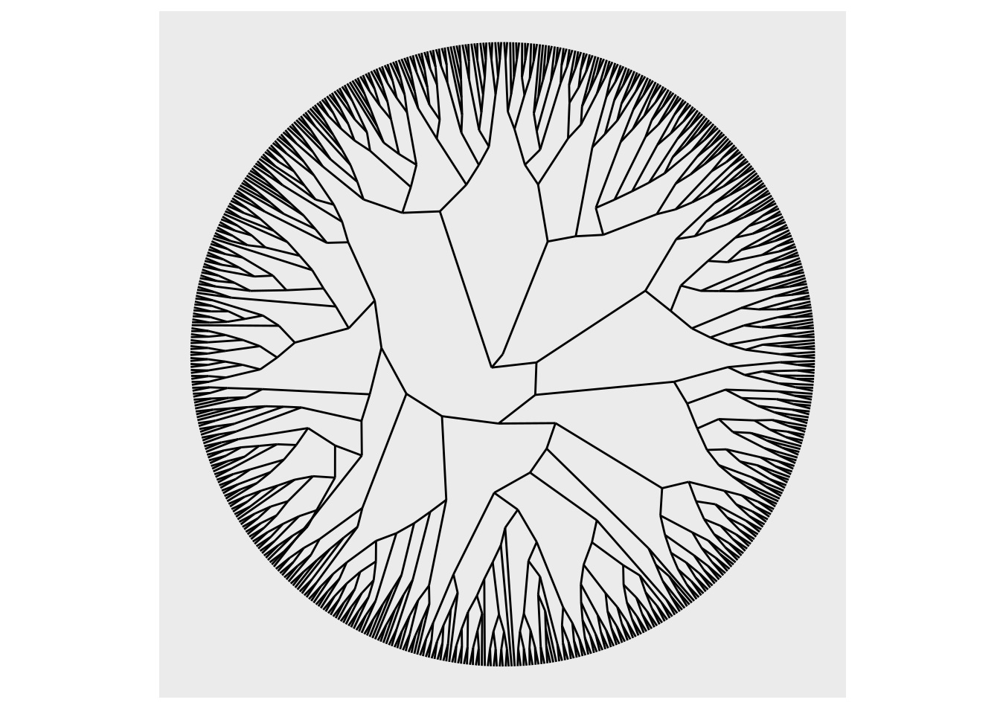
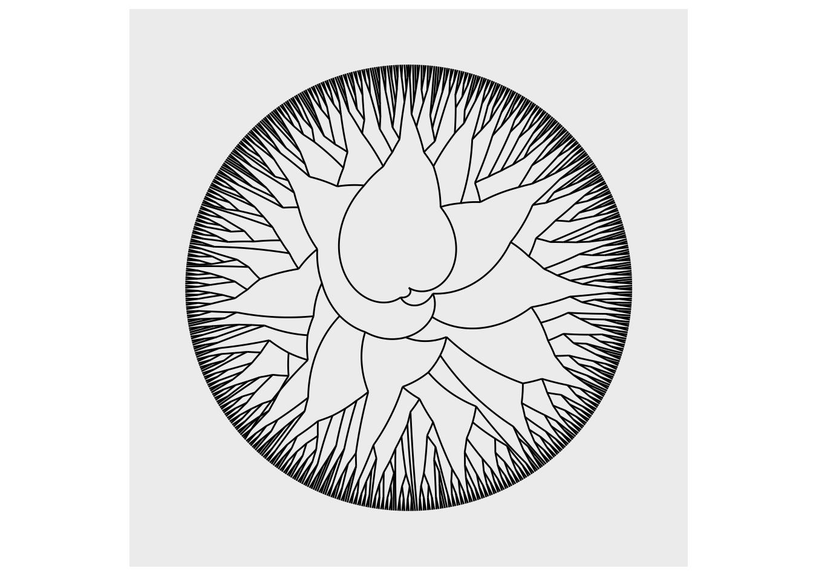
7.3.2 Drawing nodes
points
more specialized geoms: tiles
geom_node_<functions> geom_node_point() geom_node_tile()
Getting Started guide to nodes
ggraph(luv_graph, layout = "stress") +
geom_edge_link() +
geom_node_point(aes(colour =factor(members)),
show.legend = F)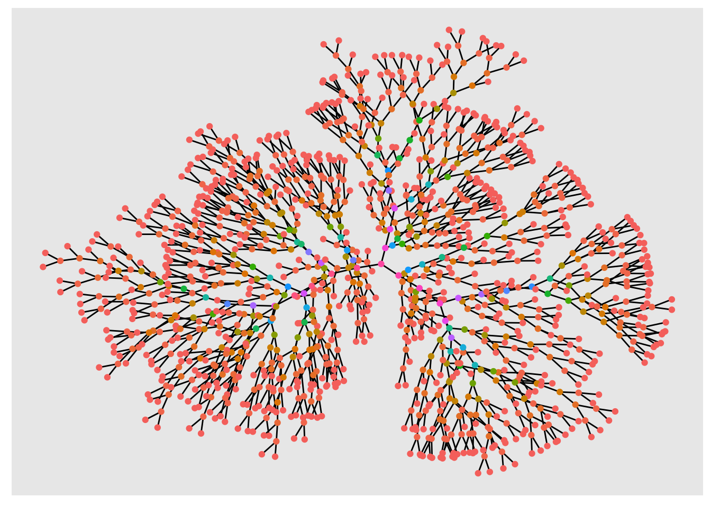
More features could be added to calculate node and edge centrality, such as:
- centrality_power()
- centrality_degree()
ggraph(luv_graph, layout = "stress") +
geom_edge_link() +
geom_node_point(aes(colour =centrality_power()))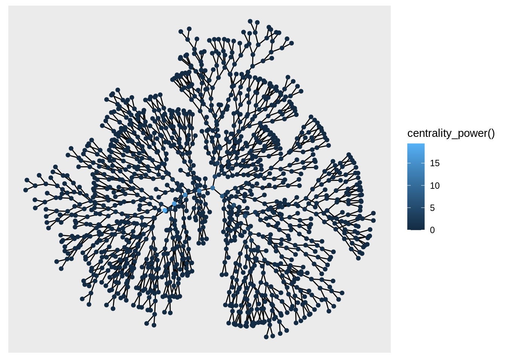
Or making tiles:
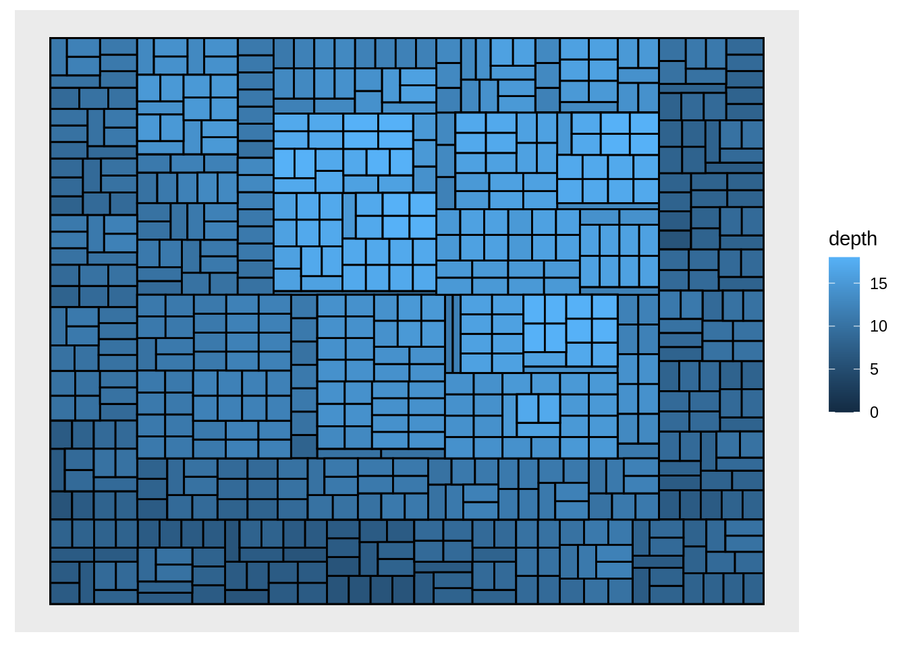
7.3.3 Drawing edges
geom_edge_link() draws a straight line between the connected nodes, actually what it does is: it will split up the line in a bunch of small fragments.
- geom_edge_link()
- geom_edge_link2()
- geom_edge_fan()
- geom_edge_parallel()
- geom_edge_elbow()
- geom_edge_bend()
- geom_edge_diagonal()
Getting Started guide to edges
The after_stat(index):
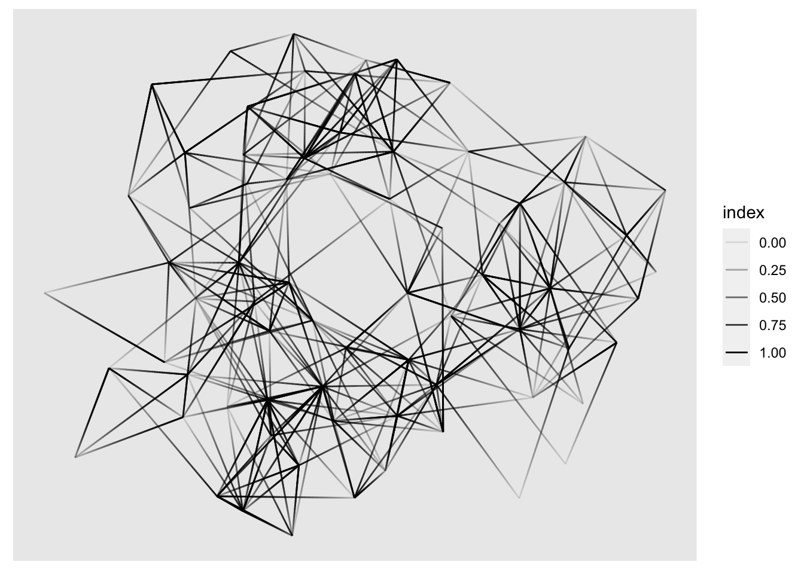
Here is an example about how to use node.class variable, the graph is the first that we have seen and it is artificially made with:
tidygraph::play_erdos_renyi()graph <- tidygraph::play_erdos_renyi(n = 10, p = 0.2) %>%
activate(nodes) %>%
mutate(class = sample(letters[1:4],
n(), replace = TRUE)) %>%
activate(edges) %>%
arrange(.N()$class[from])
ggraph(graph, layout = "stress") +
geom_edge_link2(
aes(colour = node.class),
width = 3,
lineend = "round")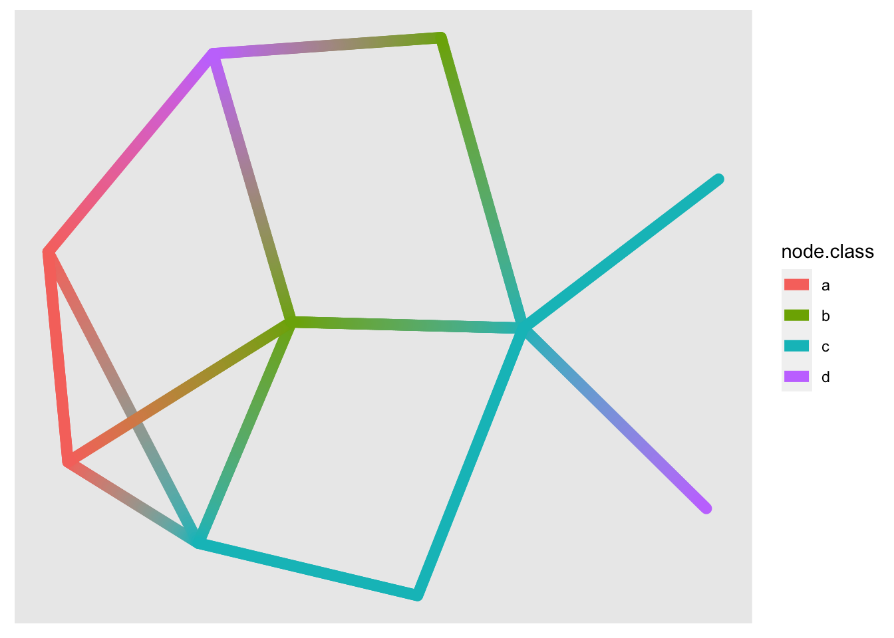
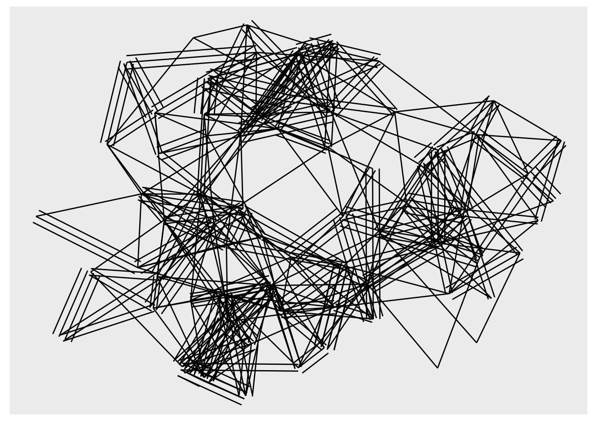
Trees and specifically dendrograms:
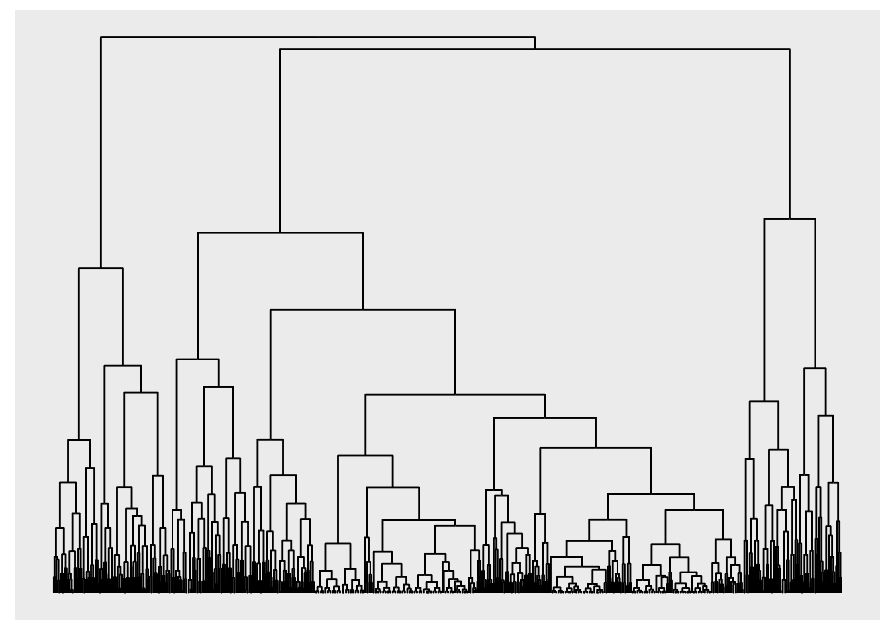